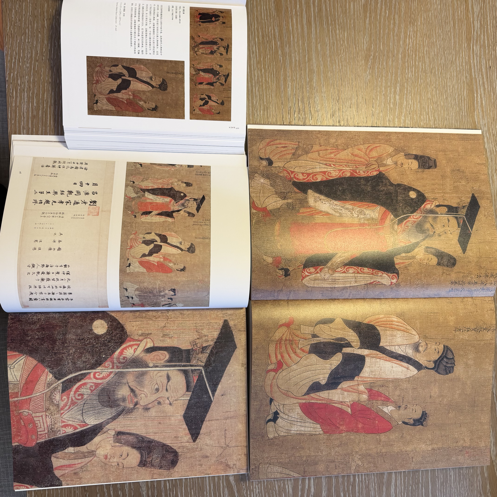
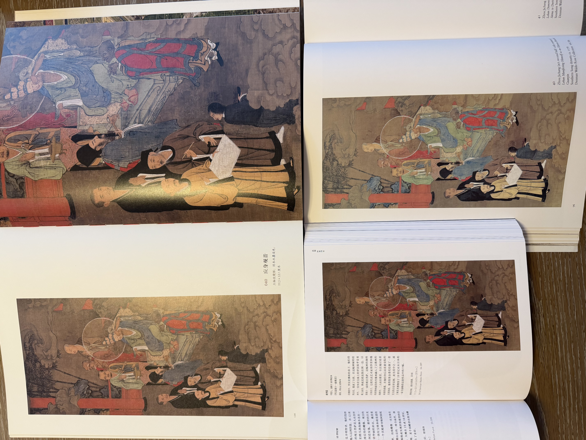
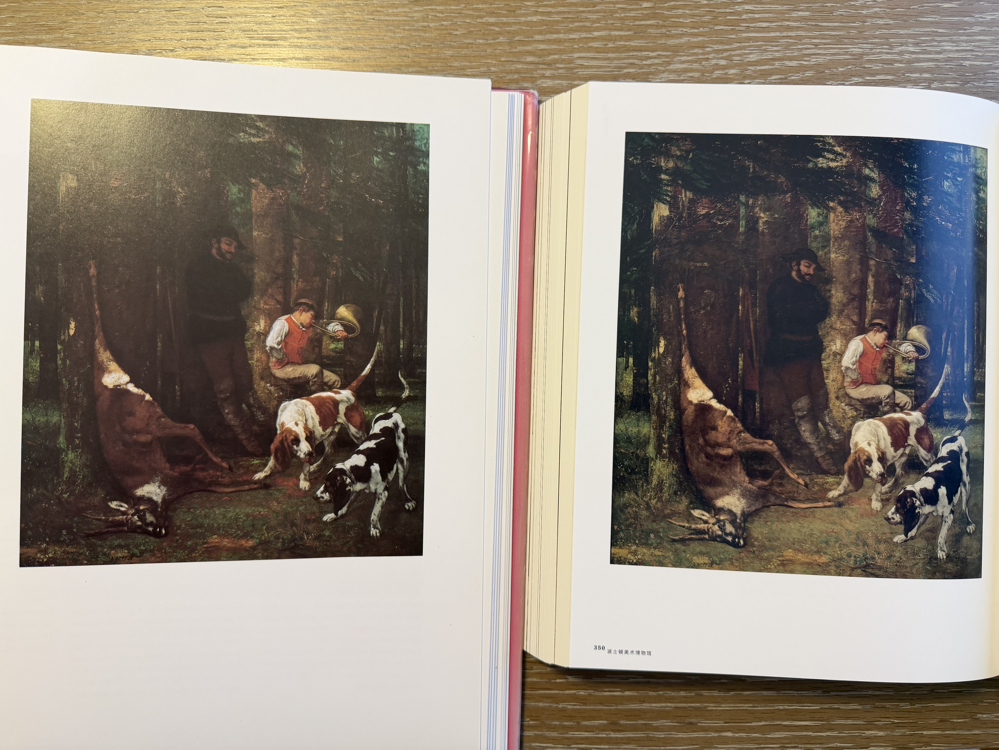
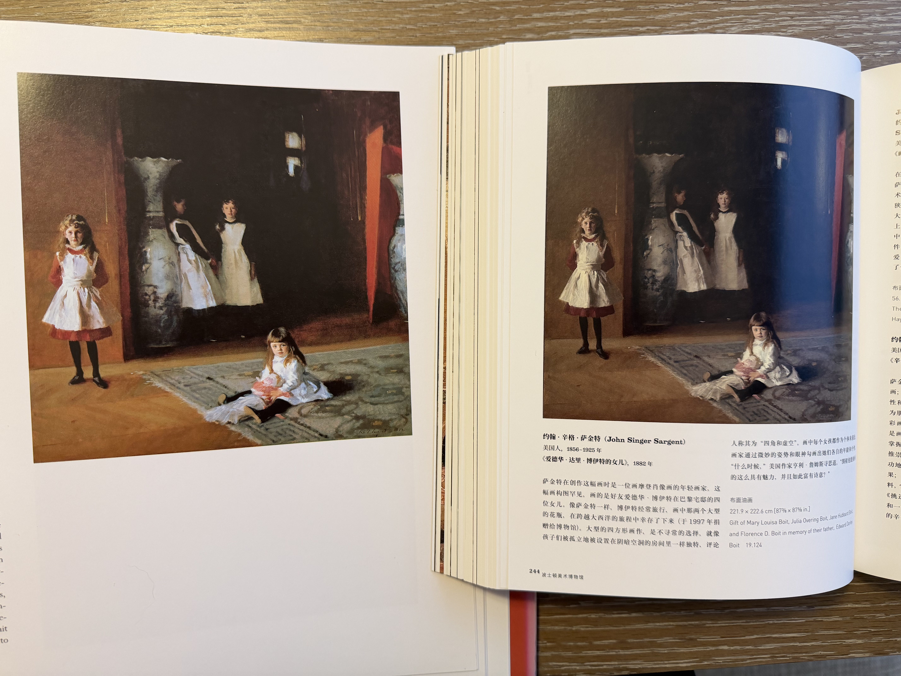

波士顿美术博物馆图录小议

文章目录
我这人附庸风雅，虽然不懂艺术，却爱逛博物馆，也爱买画册。这次回美东，虽然对象蛮不情愿，我还是将一些熟悉的博物馆纳入行程，也算是补了我学生期间省的票钱。其中，MFA 可谓是我最熟悉的博物馆了，我经常会去逛特展，而学校每年假期也会组织留校学生（虽然指的是本科生，但我经常混迹其中）参观。有一次我还遇上了穿同款和服与身穿和服的卡米尔莫奈合照的机会。
这次发现 MFA 出了中文版的馆藏指南（也许以前就有，但这次我才注意到），我便开心地买了一本。家里还有一些其他的 MFA 图录，这次便一起聊一聊吧。
《龙之国的传说》中英文两版
MFA 的中国古代艺术藏品甚多，但书画常展一般只会轮展几幅，而也许是藏品（甚至包括多数中国藏品）多来自日本，或是我运气一般，MFA 的东亚特展常有日本主题，鲜有中国主题，我在波士顿的这七年里，也只在 2012 年的漆器展和 15 年的春画展得以管窥，无法览其全貌。2007，2008 和 2011 年 MFA 有过三次中国书画展，分别是翁氏家藏，吴门画派和唐宋书画，可惜我 2012 年才来波士顿，错过了一饱眼福的机会。2018 年翁万戈（翁同龢玄孙）百岁诞辰之际，又向 MFA 捐赠了 183 件藏品，可惜我 2019 年赴西岸工作，又错过了此后的三次翁氏家藏大展。希望将来 MFA 能给这些展览出套图录，弥补遗憾。
而在近 30 年前，1997 年的 4 月至 7 月间，MFA 也办了一个中国书画展，展出了当时 153 件馆藏。当时的盛况已不可究，倒是能从其图录 Tales from the Land of Dragons: 1000 Years of Chinese Painting 窥得一点。这套书后来出了中文版《龙之国的传说：波士顿美术博物馆藏唐宋元书画》，由北大出版，佳作书局发行。我买了中英两版，觉得都有些缺憾。英文版惜其年代久远，仅由 56 幅彩图，不够过瘾。而中文版我当时是抱着的《浮世绘艺术》的期望买的（现在想来这本书可能是国产画册的巅峰吧），兴冲冲等了两个月海运，到手却大跌眼镜。虽然顶着 153 张全彩大图的噱头，一些图片比如《历代帝王图》非常模糊，整版印刷甚至能看到马赛克。颜色也很暗淡，远没有原画或是英文版鲜亮，暗处细节都没能很好地表现出来。比如这次轮展的周季常的《罗汉显现十一面观音》，原画，英文版，甚至是《馆藏指南》都能看出僧袍的细节，而中文版的僧袍是一片纯黑的，什么都看不见，纯纯浪费纸张。而调色更是灾难，和英文版与我的照片相比，明显偏绿，我怀疑是直接将 RGB 的照片按 CMYK 印刷导致的。很难想像这么一本大书，在细节上这么不讲究，真是遗憾。附赠（为了赠品我没买最低价的那套，可能从价格上来说不能算完全的赠品）的宋陈容九龙图卷倒是不错，超长折页，印刷也清晰，但还是有发绿的问题，以及这套图卷更凸显了中文版占了 24 页整版的九龙图卷没有做成拉页的失败。这套图录听说 2000 年还出了日文版，收了 132 幅，不知道质量如何。

Figure 1: 《历代帝王图》的对比

Figure 2: 《罗汉显现十一面观音》的对比
MFA Highlights - Arts of China 与《波士顿美术博物馆 馆藏指南》
2013 年 MFA 出过一本小开本的中国藏品导览，和馆藏指南差不多大，都算是导览类书籍。Arts of China 的编者是日本人，后来还编过费城美术馆的中国藏品导览。这本书的编排还挺别致的，并非按照朝代或品类划分，而是分成墓葬、宗教、宫廷、文人和文化交流五个类别。图片质量就导览而言还可以，算是对馆藏指南的补充。
而馆藏指南出了中文版，让我很开心，虽然内页中文不知道是字号还是字体的缘故，总给人一种糊作一团的感觉，但毕竟是母语，读起来还是比英文版畅快许多。
Monet in the ’90s 与 Masterpiece Paintings from the Museum of Fine Arts, Boston
我还淘过两本旧画册，大概都是在哈佛书店地下旧书层买的。这两本一本是 1989 年的，另一本则是 1986 年出的，都有着浓浓的时代印记——图片尺寸普遍偏小，彩图数量精打细算。前者是 1990 年莫奈展的论文式导览，着眼于莫奈在 Giverny 的系列绘画（干草堆，白杨树，鲁昂大教堂等）。
后者则是欧美绘画的图录，和《馆藏指南》欧美艺术的选图重合率颇高，适合对照阅读。欧美绘画图录的开本大，图片也相对较大，肌理表现也更清晰，但是可能受限于当时的印刷技术，明暗细节有一些损失；馆藏指南图片较小，但有些图片，尤其是深色背景的油画细节反而更清楚，调色也更准确一些。有一些画作在两本书上的印刷尺寸差不多，就更能感受到两本书的印刷各有千秋。比如库尔贝的《猎物》，就能看出来《馆藏指南》的笔触更清晰；比如萨金特的《爱德华·达理·博伊特的女儿》，则还是欧美绘画图录更剩一筹。而在一些画作选择上，比如布歇的《泉边停歇》和《从市场归来》，两本书各选其一，就更让人纠结了。但是我还是会推荐更新的馆藏指南，全中文，覆盖广，易入手，还要什么自行车，作为入门图录够用了。

Figure 3: 《猎物》的对比

Figure 4: 《爱德华·达理·博伊特的女儿》的对比
几套书比下来，感觉 MFA 编的这些书都有一些不足，如果不是对某个类别特别感兴趣，那《馆藏指南》是最值得入手的了。但是我还是希望未来 MFA 可以出一套翁氏家藏的图录，如果有出版社能吸取《龙之国的传说》的前车之鉴，认真做一套中文版就更好了。
文章作者
上次更新 2025-10-14